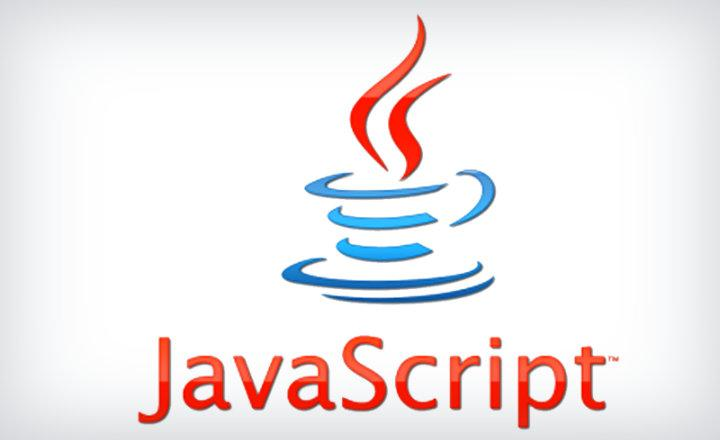

Un página web es una sola página como una hoja que puedes tener CSS,
JavaScript o php. Un sitio web es un conjunto de páginas web con un
domino es común. Una aplicacion web es un software que contiene lenguajes
de programacón, base de datos etc. Todo lo que funciona en el navegador
es web.
Crear una página web en HTML es algo sorprendentemente fácil de
aprender incluso para personas no técnicas y algo a lo que le vas a
sacar muchísimo partido, ya sea con webs hechas en HTML puro o con
webs basadas en WordPress, Blogger u otros CMS.
Tanto es así que, en un simple post como éste, ya puedes aprender lo
suficiente para hacer cosas realmente interesantes en HTML y eso es
precisamente lo que vamos a hacer hoy. Ahora bien, antes de ponernos
con ello, debes preguntarte si crear páginas web en HTML es realmente
lo que necesitas. Me explico: hoy en día hay dos vías de crear una web
y sus páginas:
1-La vía artesanal (la «antigua»): componer tu web a base de crear «a mano»
el código HTML de cada una de esas páginas de tu web y enlazarlas entre sí.
2-La vía moderna: usar un CMS como, por ejemplo, WordPress, trabajando de
manera visual, sin tener que codificar y maquetar el contenido en HTML.
No ocupas saber lenguajes de programación para saber HTML.
Qué es el lenguaje HTML
Aunque es muy poderoso, HTML no es un lenguaje complejo y puede ofrecer
satisfacciones inmediatas para la creación de páginas web. Es un lenguaje
de marcado de hipertexto, de modo que a través de este lenguaje, un texto
puede marcarse insertando etiquetas, describiendo su función, color, enlace
u otras características. Para comprobar en qué consiste este tipo de lenguaje
bastará con hacer clic derecho en cualquier web. Podrás ver la opción de
«Ver código fuente» que te permitirá comprobar cómo se estructura la web
en HTML.
De todas formas, tenemos que decir que HTML no es realmente un lenguaje
de programación, ya que no incluye ninguna definición de variables,
estructuras de datos, funciones o estructuras de control, sino que es s
olo un lenguaje de marcado que describe el diseño, el formato gráfico o
los modos o diseños de visualización gráfica. El contenido textual y no
textual de una página web que utiliza etiquetas de formato. Sin embargo,
HTML admite la inclusión de scripts y objetos externos, como imágenes o
películas.
La extensión de los archivos en este formato es .html (es más reciente) o
.htm (es más obsoleto). Para aquellos que deseen poder crear su propia
página web pueden aprender a hacerlas a partir del dominio del lenguaje
HTML tal y como os explicamos a continuación.
Qué es el lenguaje CSS
CSS (siglas en inglés de Cascading Style Sheets), en español «Hojas de
estilo en cascada», es un lenguaje de diseño gráfico para definir y crear
la presentación de un documento estructurado escrito en un lenguaje de marcado.
Es muy usado para establecer el diseño visual de los documentos web, e
interfaces de usuario escritas en HTML o XHTML; el lenguaje puede ser
aplicado a cualquier documento XML, incluyendo XHTML, SVG, XUL, RSS,
etcétera. Te puede ayudar a crear tu propio sitio web. Junto con HTML
y JavaScript, CSS es una tecnología usada por muchos sitios web para
crear páginas visualmente atractivas, interfaces de usuario para
aplicaciones web y GUIs para muchas aplicaciones móviles (como Firefox OS).
CSS está diseñado principalmente para marcar la separación del contenido
del documento y la forma de presentación de este, características tales
como las capas o layouts, los colores y las fuentes. Esta separación
busca mejorar la accesibilidad del documento, proveer más flexibilidad
y control en la especificación de características presentacionales,
permitir que varios documentos HTML compartan un mismo estilo usando
una sola hoja de estilos separada en un archivo .css, y reducir la
complejidad y la repetición de código en la estructura del documento.
Qué es el lenguaje de programación JavaScript
JavaScript (abreviado comúnmente JS) es un lenguaje de programación
interpretado, dialecto del estándar ECMAScript. Se define como orientado
a objetos, basado en prototipos, imperativo, débilmente tipado y dinámico.
Se utiliza principalmente del lado del cliente, implementado como parte de
un navegador web permitiendo mejoras en la interfaz de usuario y páginas
web dinámicas3 y JavaScript del lado del servidor (Server-side JavaScript o
SSJS). Su uso en aplicaciones externas a la web, por ejemplo en documentos
PDF, aplicaciones de escritorio (mayoritariamente widgets) es también
significativo.
Desde 2012, todos los navegadores modernos soportan completamente ECMAScript
5.1, una versión de JavaScript. Los navegadores más antiguos soportan por
lo menos ECMAScript 3. La sexta edición se liberó en julio de 2015.
JavaScript se diseñó con una sintaxis similar a C [cita requerida],
aunque adopta nombres y convenciones del lenguaje de programación
Java. Sin embargo, Java y JavaScript tienen semánticas y propósitos
diferentes.

Qué es el lenguaje de programación PHP
PHP es un lenguaje de programación de uso general que se adapta especialmente
al desarrollo web. Fue creado inicialmente por el programador danés-canadiense
Rasmus Lerdorf en 1994. En la actualidad, la implementación de referencia de
PHP es producida por The PHP Group.4 PHP originalmente significaba Personal
Home Page (Página personal), pero ahora significa el inicialismon 1 recursivo
PHP: Hypertext Preprocessor.
El código PHP suele ser procesado en un servidor web por un intérprete PHP
implementado como un módulo, un daemon o como un ejecutable de interfaz de
entrada común (CGI). En un servidor web, el resultado del código PHP
interpretado y ejecutado —que puede ser cualquier tipo de datos, como
el HTML generado o datos de imágenes binarias— formaría la totalidad o
parte de una respuesta HTTP. Existen diversos sistemas de plantillas,
sistemas de gestión de contenidos y frameworks que pueden emplearse para
organizar o facilitar la generación de esa respuesta. Por otra parte,
PHP puede utilizarse para muchas tareas de programación fuera del contexto
de la web, como aplicaciones gráficas autónomas7 y el control de drones.
También se puede interpretar y ejecutar un código PHP cualquiera a través
de una interfaz de línea de comandos (CLI).
¿Cómo crear una página web en HTML?
En este fichero, se creará el contenido en sí (el texto de los títulos,
párrafos, crear formularios HTML, etc.), así como las etiquetas (o “tags”)
HTML (luego veremos que son) necesarias para definir la estructura del
documento HTML.
Tipos de páginas web
Página web estática
Una página web estática es una página web que se entrega al navegador
del usuario exactamente como está almacenada, en contraste con las
páginas web dinámicas que son generadas por una aplicación web. En las páginas
web estática la informacion esta en el codigo.Son las páginas que la
información es permanente (la información no puede cambiar y es de pura
lectura) y se refresca de manera constante, no soporta bases de datos.
Página web dinámicas
Son páginas que puedes ingresar datos e interactuar con el usuario, en
estas páginas si soportan bases de datos y esta echa con lenguajes de
programación.asociada a las mismas deberán utilizarse etiquetas HTML y
algún lenguaje de programación que se ejecute “del lado del servidor”,
es decir, que esté alojado en el mismo servidor en el que está alojada
la página web.